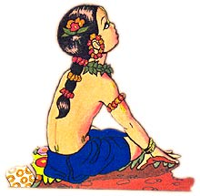

When the boys first saw the demon, they thought he was a statue. They began to talk among themselves.
“What is this?” said one boy. It appears to be a huge animal. He looks like he wants to shallow all of us all!”
“Just see” said another. “Isn’t a big snake that has opened his mouth wide just to eat us?”

“His breath is a fierce hot wind,” said a third boy, “and the fishy bad smell from his mouth is the smell of his intestines. But he can not swallow us all at once. Even if he does, Gopal will help us.”
And so, unafraid, they march right into the mouth of the demon. Agha waited for Gopal.